0
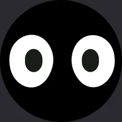
Нейтральный
neutralНичего не делать: он возвращается к нему, когда ничего не происходит. Чаще в «средний» день (палитра «так себе») и вечером.
Здесь собраны все эмоции Пипа: как выглядят, как звучат и что сделать, чтобы их увидеть. Номер слева — постоянный номер эмоции в системе.
«Палитра дня» — фоновое настроение по тому, как у Пипа дела (отлично, хорошо, так себе, плохо).

neutralНичего не делать: он возвращается к нему, когда ничего не происходит. Чаще в «средний» день (палитра «так себе») и вечером.
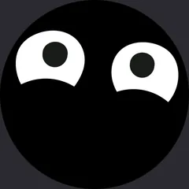
happyХороший день (палитра «отлично», вечер). Отмылся под губкой (и «свежий» после мытья). Подключить к зарядке. Поиграть с ним, когда не скучает. Сам здоровается, если доверяет тебе. В ритм-игре попасть в такт. Палец «пойман» после погони.
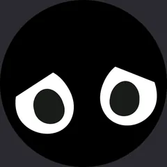
sadПлохой день (палитра «плохо»). Мало внимания (любовь ниже ~22%, по очереди с «обижен»). Держать полным на зарядке очень долго. Проиграть ему. Долго дуть — замёрз («зябко»).
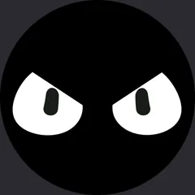
angryГолоден (еда ниже 10%). Ночью будили уведомлениями — проснётся злым. Лестница злости: много тычков, бросок, дёргание кабеля. Помыть, когда он и так чистый. Разрядить батарею до нуля — после включения злой.
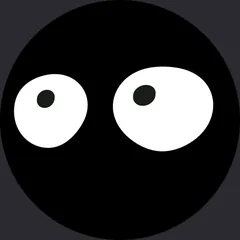
surprisedПеревернуть лицом вверх, когда он спал лицом вниз. Ку-ку (на миг лицом вниз и обратно). Начало чиха, отрыжки, пука, икоты. Тычок («а?»). Резко подуть. Бупнуть в нос. Тычок в бок.
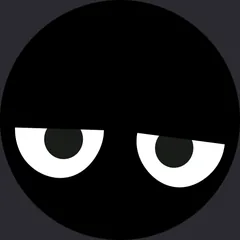
sleepyНочью (22–6) при энергии ниже 50%. Только что проснулся. Энергия ниже 25%. Покачать (колыбельная). Провести пальцем вниз по глазам. Нарисовать спираль внутрь, когда устал.
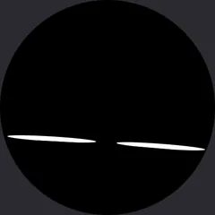
asleepПоложить экраном вниз на 2 с. Ночью засыпает сам (23–7, энергия ниже 60%). Экран погас по таймеру — дремлет. Иногда притворяется спящим (палец его выдаёт).
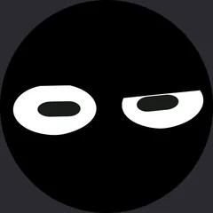
skepticalПалитра «так себе». Мыть, когда он и так совсем чистый (90%+), или тереть дальше, когда уже отмылся — первая ступень, потом раздражён и зол. Второй раз подряд дёрнули кабель («опять кабель?»). Тычок («серьёзно?»). Обиженный не принимает доброту. Подули — «хватит». Держать палец на глазу.
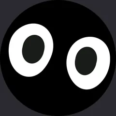
curiousПалитры хорошего и среднего дня. Идти с ним (много шагов — прогулка). «Твоя очередь» в ритм-игре. Щелчок пальцем по экрану. Сам оглядывается по сторонам.
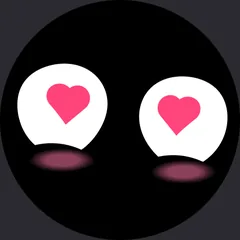
loveДолго гладить. «Привет!» в конце рождения. Мастер ритма в ритм-игре. Встреча после разлуки, если любит тебя. Вечерняя палитра хорошего дня.
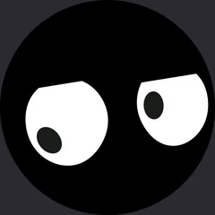
dizzyСильно потрясти (или средне, но дольше 1.6 с). 10 нажатий нижней кнопки подряд («голова кругом»). Перевернуть 4+ раз подряд — накувыркался. Отпустить после спирали. Резкий щелчок пальцем.
ouchТкнуть пальцем. Резко подуть. Ткнуть пальцем прямо в глаз — щурит его.
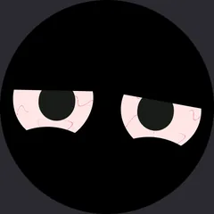
stonedРедкая карта дня (9–21 ч, примерно раз в 10 дней): вечером на зарядке, когда весело, но мало энергии.
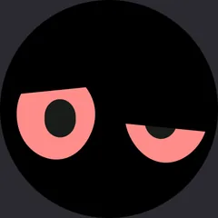
pinkeyeРедкая карта дня: когда он грязный.
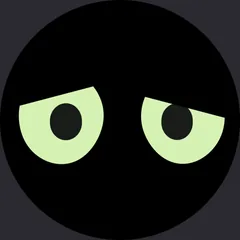
nauseousПерекормить печеньем («объелся»). Болен (долго грязный) — по очереди с «болен».
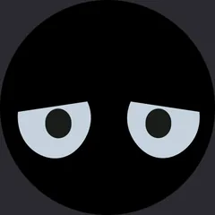
sickБатарея почти пуста (ниже 4%). Две потребности на нуле. Долго грязный или простыл мокрым (подули после мытья). Сам кашляет.
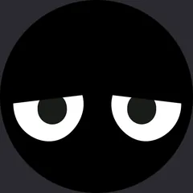
tiredБатарея ниже 10%. Энергия ниже 25%. Вечерняя палитра плохого дня.
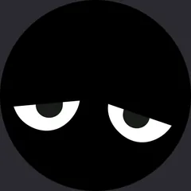
exhaustedЭнергия ниже 12%.
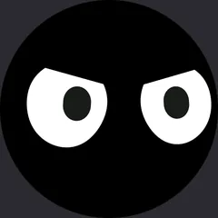
annoyedГолоден (еда ниже 22%). Много быстрых нажатий нижней кнопки («хватит»). Разбудить нажатиями. Тыкать, когда он уже раздражён. Подуть — «хватит». Качать, когда не хочет спать. Остаток обиды.
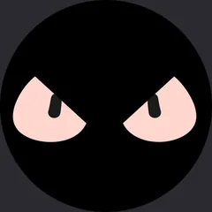
furiousОчень голоден (второе лицо голода). Выше по лестнице злости: снова бросить, тыкать, дёргать кабель. Мыть чистого слишком долго — отшвырнёт губку.
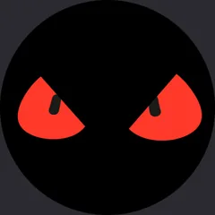
rageЕщё выше по лестнице злости (бросить/тыкать/дёргать кабель снова и снова). Отшвырнул губку.
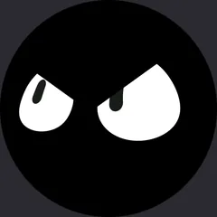
swearingЛестница злости в плохой день: «надоел», бросок. Насильно кормить или мыть, когда он обижен.
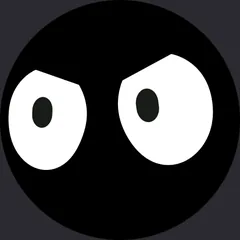
indignantОбыграть его в игре. Разбудить второй раз за несколько минут. Держать палец на глазу 3+ с. Сильный остаток обиды.
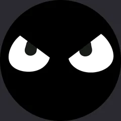
belligerentГолоден (второе лицо). Встреча, когда он тебя не любит (любовь низкая).
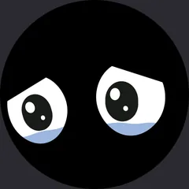
hurtМало любви (ниже ~22%). После падения или броска. Держали полным на зарядке, потом сняли. Задёргали нижней кнопкой. Долго не заходили («дуется»). Остаток обиды.
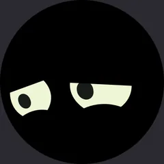
disgustedГрязный (чистота ниже ~30%). Перекормить.
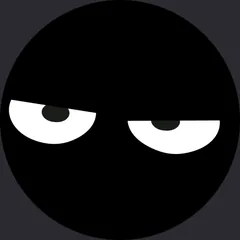
suspiciousПалитра «так себе». Остаток обиды. Встреча при низком доверии («настороже»).
cynicalСкучно (веселье низкое, второе лицо). Палитры «так себе» и «плохо».
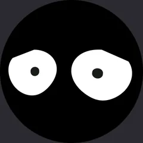
afraidГромкий хлопок рядом. При низком доверии вздрагивает от пальца или толчка. Тряска — «страшно». Подуть, когда не доверяет. «Бу!» — разбудить притворщика.
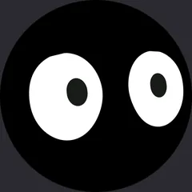
nervousБатарея ниже 20%. Давно не гулял (второе лицо). Подуть. Спираль — «неуютно». Два пальца на экран не на глаза, когда доверие низкое. Сам нервно оглядывается.
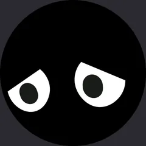
despondentЛюбовь ниже 10% (второе лицо). Палитра плохого дня.
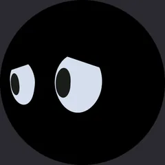
lonelyЛюбовь ниже 10%. «Скучает по тебе» — сам. Вечерняя палитра плохого дня.
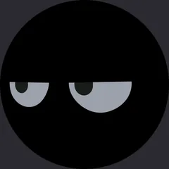
gloomyДавно не гулял (прогулки ниже 10%). Грязный (чистота ниже 12%). Палитра плохого дня.
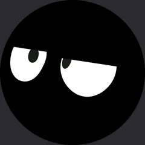
dullЭнергия на нуле (второе лицо). Потрясти три раза за минуту («растрясли»). Сам «залипает».
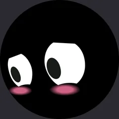
shyТычок, когда сильно любит. Тап по щеке. Погладить по голове или щеке. Сам смущённо смотрит. Мирится после обиды («оттаивает»).
smugОн выиграл у тебя в игре. Ты ошибся в ритм-игре. Тычок — «не замечаю». Палитра отличного дня. Сам.
boredВеселье ниже 12%. Не ответить в ритм-игре. Качать отдохнувшего. Сам вздыхает.
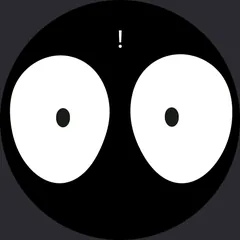
shockedОчень громкий хлопок. Уронить. «Бу!».
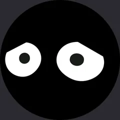
dismayedПачка уведомлений сразу. Палитра плохого дня.
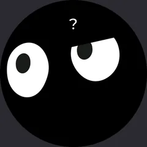
puzzledПеревернуть вверх ногами больше чем на 1 с. Пропущенный звонок. Икота. Спираль — «что?». Сам «размышляет».
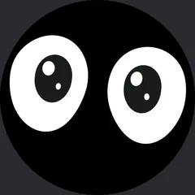
amazedПалитры хорошего дня. На прогулке. Ку-ку. Рекорд в игре с ним. Сам «видит что-то». Пальцем раскрыть ему глаза.
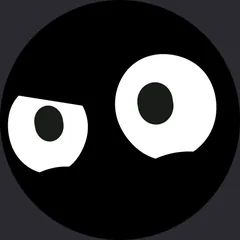
cheekyВключить брелок (конец пробуждения). Палитра отличного дня. Тап под подбородком. Увернулся от пальца. Сам подмигивает. После пука.
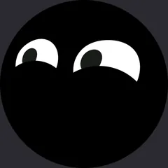
contentПалитры хорошего и среднего дня. Мыть, пока он не совсем чистый (жмурится от удовольствия). Погладить по голове или щеке. Покормить, когда сыт наполовину.
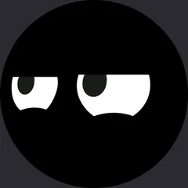
comfyНа зарядке дольше минуты. Качать. Гладить по голове усталого. Вечерние палитры.
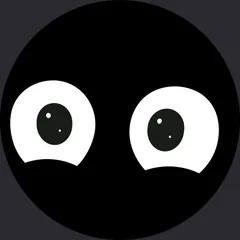
yesПозвать играть, когда ему скучно. Ответить на звонок с брелока. Привязать телефон.
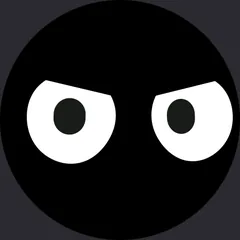
noПозвать играть, когда устал, грязный или обижен. Предложить еду или мытьё, когда он отказывается. Сбросить звонок.
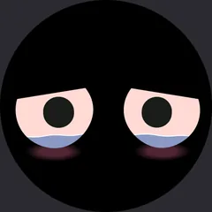
allergicРедкая карта дня: весной после прогулок. Чихает.
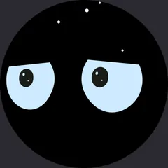
frozenРедкая карта дня: зимним утром. Или дуть на него 10 секунд.
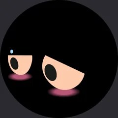
overheatedРедкая карта дня: летом в полдень, после прогулки или на зарядке.
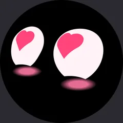
smittenРедкая карта дня: после того как его много гладили.
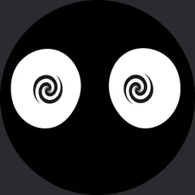
hypnotizedРедкая карта дня: после частых встряхиваний. Нарисовать спираль внутрь — «заворожён».
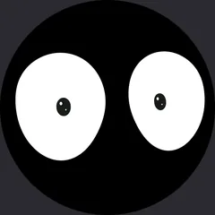
hyperРедкая карта дня: печенье за печеньем.
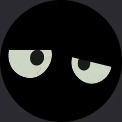
zombieРедкая карта дня: после ночи, когда его будили.
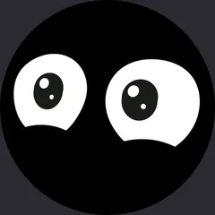
excitedПокачать брелок из стороны в сторону, ~раз в секунду («уии!»). Слегка потрясти. День рождения владельца (песня).
dreamyПоложить палец на экран и не двигать. Мягко подуть («ветерок»). Сам напевает.
poutyНачать гладить и бросить три раза подряд («дразнят»). Ревнует к телефону (много уведомлений, музыка без него). Ещё обижен, когда гладят.
proudПройти с ним дневную норму шагов.
focusedМедленно вести пальцем по экрану — следит за ним. Сам задумывается.
touchedДолго гладить, когда он тебя любит. Помириться после обиды долгим поглаживанием.
playfulКу-ку (на миг лицом вниз и обратно). Водить пальцем по экрану, не отпуская (погоня). Тычок — «ещё!». Быстрый щелчок пальцем.
relievedПеревернуть обратно после «вверх ногами». Натанцевался. Икота прошла. После «головы кругом» (10 нажатий). Убрать два пальца после «глаза разбегаются».
laughingЩекотать: быстро тереть пальцем в одной точке (где угодно, хоть на щеке). 2–3 быстрых нажатия нижней кнопки. Тычок в бок. Два пальца на экран не на глаза, когда ему очень весело.
gratefulПокормить (подержать нижнюю кнопку), когда голоден.
dancingМузыка с ритмом рядом с брелоком или на привязанном телефоне, если он в настроении.
tumblingПереворачивать брелок вверх ногами и обратно 4 раза за 4 секунды.
berserkВершина лестницы злости в очень плохой день: бросать, тыкать, дёргать кабель снова и снова.
whirledРисовать пальцем на экране спираль или круги.
woozyНарисовать пальцем на экране спираль или круги (2+ оборота) и отпустить палец.
impatientПовседневное лицо: ждёт тебя (палитра «так себе»). Сам.
wistfulПовседневное лицо в средние и плохие дни, вечером. Сам «мечтает».
blissfulПогладить под подбородком или по щеке. Повседневное лицо в хорошие дни. Сам.
adoringПовседневное лицо в отличный день. Сам «обожает тебя».
slyСам «замышляет». Иногда после пука.
sheepishПосле отрыжки или пука. Отшвырнул губку — «прости».
determinedБарабанит в ритм-игре. Приседает перед прыжком в погоне за пальцем.
eurekaСам: задумался — и придумал.
eyerollТкнуть, когда он раздражён. Сам, когда раздражён.
flusteredТап по щеке. Тычок в бок. Потереть щёку.
squishedНакрыть экран ладонью (всей, не пальцами) и подержать секунду. Убрать ладонь — продолжение сценки.
stretchedПоставить по пальцу на каждый глаз и потянуть пальцы в любую сторону (в стороны, вверх, по диагонали) больше чем на ~1 см. Отпустить — продолжение сценки.
overwhelmedПоложить два пальца на экран не на глаза (например, внизу) и держать полсекунды и дольше. Держать дольше 1.5 с — вторая часть сценки. Иногда вместо него выпадает «нервничает» или «смех».
pinchedПоставить по пальцу на каждый глаз (ближе к внешним краям) и свести пальцы к середине больше чем на ~1 см. Отпустить — продолжение сценки.
beamingНачать гладить пальцем (вариант вместо радости, примерно раз из семи). Или поймать: водить пальцем по экрану, пока он гонится, и отпустить (почти в половине случаев).
cuddlyНачать гладить пальцем по экрану: примерно раз из шести, если любовь выше 50%, иначе редко.
eagerПокормить: зажать нижнюю кнопку на 0.6 с, пока летит печенье. Чаще, если он не сыт.
yummyПокормить (зажать нижнюю кнопку), когда он рад еде, — примерно в половине случаев после «ням».
triumphantПроиграть ему в игре с ним (пинг-понг, «Повтори за мной», крестики-нолики против Пипа) и вернуться к нему в течение 10 секунд — примерно в половине случаев.
deflatedОбыграть его в игре с ним (пинг-понг, «Повтори за мной», крестики-нолики против Пипа) и вернуться к нему в течение 10 секунд — примерно в половине случаев, если он не обиделся.
sparklingПомыть грязного до чистоты: тап нижней кнопки и сразу зажать её, держать, пока не отмоется (примерно в половине случаев).
groggyРазбудить спящего: несколько тапов нижней кнопкой или перевернуть экраном вверх после сна экраном вниз (вариант, примерно раз из трёх).
starstruckПобить рекорд в «Шарике» и вернуться к нему. Пройти дневную норму шагов (примерно раз из трёх вместо гордости). Сам, в отличный день.
singingСам, в хорошем настроении днём. Натанцевался под музыку — иногда после неё ещё поёт.
kissГладить по экрану долго (7+ с), когда он тебя любит, — иногда вместо «растроган». Изредка — тап между глаз, когда очень любит.
flirtyТап по щеке или под подбородком, когда любовь выше 50% (иногда). Сам.
rainbowСам, когда всех потребностей больше половины и настроение хорошее. Чаще в день рождения владельца.
peekingКу-ку (на миг лицом вниз и обратно) — иногда. Сам, когда не скучает и доверяет.
zenДолго держать палец на экране, не двигая, — срабатывает случайно.
sweetdreamУснул сытым, чистым и любимым — чаще всего спит так.
meltingГладить по экрану долго (7+ с), когда он тебя любит, — иногда вместо «растроган».
applauseОбыграть его в игре с ним и вернуться к нему в течение 10 секунд — примерно в трети случаев, если доверяет и не обижен. Побить рекорд в «Шарике».
coolСам, в хорошем настроении. Проиграть ему в игре с ним и вернуться — иногда.
puppyСам, когда проголодался или мало любви. Начать гладить и бросить три раза подряд — иногда вместо «надулся».
butterflyСам, днём (8–20 ч).
bubblesПомыть грязного до чистоты — иногда после мытья. Сам, пока мокрый или совсем чистый.
robotСам, когда весело. Чаще, когда давно стоит на зарядке.
kittyГладить по голове (верх экрана) или под подбородком — иногда, чаще когда любит. Сам.
sillyТкнуть пальцем не в глаз, когда ему весело (иногда). Изредка — тап между глаз. Сам, в хороший день.
snickerТап в бок (иногда). Увернулся от пальца — примерно раз из трёх. Сам, в хорошем настроении.
campfireЗамёрз (долго дуть на него) — потом садится греться. Сам, вечером и ночью (19–6 ч) или когда включён кабель.
stargazingСам, поздно вечером и ночью (21–5 ч), когда не спит.
zappedПодключить кабель, когда он бодрый и заряда больше 30%.
sippingПодключить кабель, когда заряда меньше 30% или он устал.
xdЩекотать: быстро тереть пальцем одно маленькое место — примерно в половине случаев вместо обычного смеха.
roflЩекотать дольше 4 секунд — примерно в половине случаев он начинает кататься со смеху.
bouncyНачать гладить в хорошем настроении — иногда. Покормить, когда он рад, — иногда.
bloomingГладить долго (7+ с) в хорошем настроении, когда любит, — иногда. Сам в хорошем настроении, весной и летом чаще.
hearteyesГладить долго (7+ с), когда любовь выше 80%, — иногда вместо «растроган».
fireworksПройти дневную норму шагов — иногда вместо гордости. Побить рекорд в игре и вернуться к нему.
medalПройти дневную норму шагов — примерно в трети случаев вместо гордости. Проиграть ему в игре с ним и вернуться в течение 10 с — иногда.
discoВключить музыку рядом — примерно каждый третий танец под зеркальным шаром.
popeyedКу-ку (на миг лицом вниз и обратно) — иногда. Громко хлопнуть, когда доверие выше 60%, — иногда он не пугается, а изумляется. Сам.
lightbulbСам: задумался и придумал — по очереди с «Ага!».
pawsТап по щеке — иногда. Погладить по голове (верх экрана), когда он смущается.
helloВзять брелок в руки, когда экран погас, а его не трогали 5+ минут. Подойти после долгой разлуки — иногда. Тап нижней кнопкой, когда он тебя любит, — иногда.
kingПроиграть ему в игре с ним и вернуться в течение 10 с — иногда. Сам, в отличном настроении.
angelПомыть грязного до чистоты — иногда. Сразу после того, как он рыгнул или пукнул, — иногда.
impУвернулся от пальца — иногда (весёлый и доверчивый, он сам уклоняется от пальца, который тянется к глазу). Сам, когда замышляет шалость.
jugglerЛегонько потрясти из стороны в сторону — иногда, чаще когда весело. Сам, когда весело.
balloonПоднять брелок со стола, когда экран погас, днём (9–20 ч) — иногда. Сам, днём.
icecreamПокормить, когда он рад еде, — иногда вместо «ням» и «смакует», летом чаще.
umbrellaПомыть до чистоты — иногда. Сам, пока мокрый после купания. Сам, осенью.
strongmanНа прогулке: пройти половину дневной нормы шагов и достать брелок (поднять или перевернуть экраном вверх) — чаще всего. Сам, на прогулке и после неё.
magicianТкнуть пальцем, когда он притворяется спящим, — иногда вместо «бу!». Сам, когда весело.
sunriseПроснулся утром (6–11 ч) сытым и любимым — чаще всего, раз в день.
sheepСам, вечером и ночью (20–6 ч), чаще когда устал.
ninjaБыстро смахнуть пальцем по экрану — иногда. Увернулся от пальца — иногда.
sproutПомыть до чистоты в хорошем настроении — иногда. Сам, весной.
raincloudСам, в плохой день или когда любви меньше 35%.
sobbingУронить или бросить, когда он и так расстроен или любви почти нет, — примерно в половине случаев.
heartbrokenБросить брелок — иногда. Подойти после долгой разлуки, когда он обижен, — иногда.
fumingНадоесть тычками до злости — иногда. Дёргать кабель туда-сюда — иногда.
burningДовести тычками до ярости (верх лестницы злости) — в половине случаев вместо ярости.
sulkingТри раза подряд начать гладить и бросить — иногда. Ревнует к телефону — иногда. Сам, пока обида не прошла.
spookedГромкий хлопок вечером или ночью (19–6 ч) — иногда. Сам, ночью (22–5 ч), если доверие ниже 40%.
tumbleweedСам, когда скучно (мало веселья) — по очереди со вздохом скуки.
lowbattСам, когда батарея ниже 10% без кабеля или энергия почти на нуле.
hungryСам, когда голоден (еды меньше 30%).
knockoutСильно трясти долго — часто. Сильно встряхнуть или уронить — иногда.
wiltedСам, когда давно без внимания (любви меньше 30%). Сам, вечером в грустный день.
snifflesСам, когда болен (долго грязный). Замёрз мокрым (дуть на него после купания) — потом простужается.
chargedВытащить кабель, когда заряд 80% и больше (не сразу после подключения).
cutoffВытащить кабель, когда заряд от 30 до 79% (не сразу после подключения).
emptyВытащить кабель, когда заряд ниже 30% (не сразу после подключения).
queasyПерекормить: кормить, когда он уже сыт, — примерно в половине случаев вместо «объелся».
newtree1 января (если часы брелока синхронизированы): при первом включении за день — ёлочка или венок, и иногда в течение дня.
wreath1 января (если часы брелока синхронизированы): при первом включении за день — ёлочка или венок, и иногда в течение дня.
Ничего не нашлось — попробуй другое слово или фильтр «Все»